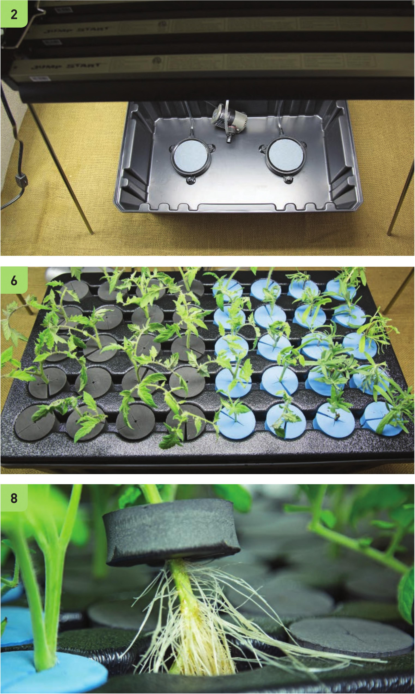

• Suitable Locations: Indoors, outdoors, or greenhouse • Growing Media: Just water • Electrical: Required • Crops: Basil, mint, sage, rosemary, thyme, lavender, tomatoes, peppers, sweet potato, strawberries, and any other plant that can be rooted from a cutting 6 Evenly space cuttings in the cloner and cover any unused holes with a collar. 7 After 4 to 7 days, most cuttings show evidence of roots. Some plants root more slowly than others and may need to stay in the system longer. 8 Plants with established roots are ready to be transplanted into a hydroponic garden. Simply remove the collar and your new plant is ready to go. STARTING SEEDS AND CUTTINGS 147
